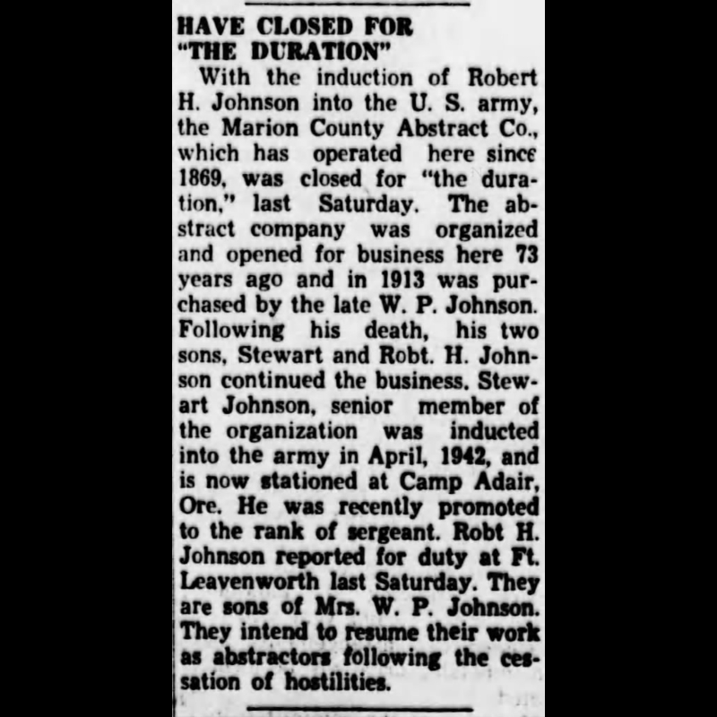

January 20, 1898
The formation of the Marion County Abstract Company is announced...
(Palmyra Spectator 1/20/1898)

January 27, 1898
Announcement of location for the company.
(Palmyra Spectator 1/27/1898)

February 3, 1898
Announcement of the election of members for Marion County Abstract Co...
(Palmyra Spectator 2/3/1898)

February 17, 1898
Announcement of anticipated opening of facility...
(Palmyra Spectator 2/17/1898)

March 24, 1898
Advertisement for Marion County Abstract Company...
(Palmyra Spectator 3/24/1898)

April 28, 1898
Advertisement for Marion County Abstract Company...
(Palmyra Spectator 4/28/1898)

April 16, 1902
Spectator profile of the then-owner of the Marion County Abstract Company,
Robert Lee Doherty (telescope references omitted).
(Palmyra Spectator 4/16/1902)

April 10, 1912
R. L. Doherty mention in the Spectator, skipping telescope talk.
(Palmyra Spectator 4/10/1912)

April 8, 1914
Announcement of William P Johnson purchasing a majority stock in the company...
(Palmyra Spectator 4/8/1914)

July 1, 1914
R. L. Doherty remained with the company after its sale.
(Palmyra Spectator 7/1/1914)

June 12, 1935
William P Johnson passed away and left the company to his 2 sons,
Robert Johnson and Stewart Johnson.
(Palmyra Spectator 6/12/1935)

January 6, 1943
Both Stewart Johnson and Robert Johnson were inducted into World War II
and had to close the company down for “the duration.”
(Palmyra Spectator 1/6/1943)

October 20, 1943
Stewart Johnson and Robert Johnson profile on their service in the war.
(Palmyra Spectator 10/20/1943)

November 14, 1945
Announcement of the re-opening of the Marion County Abstract Company.
(Palmyra Spectator 11/14/1945)

November 14, 1945
Profile for the re-opening of the Marion County Abstract Company.
(Palmyra Spectator 11/14/1945)

October 3, 1957
Announcement of Bob Johnson purchasing the company.
(Palmyra Spectator 10/3/1957)

March 9, 1960
Article detailing the Palmyra Explosion of 1960, which occurred March 2, 1960.
(Palmyra Spectator 3/9/1960)

March 9, 1960
Article detailing the Palmyra Explosion of 1960, which occurred March 2, 1960.
(Palmyra Spectator 3/9/1960)

March 9, 1960
Photo showing the building damage.
(Palmyra Spectator 3/9/1960)

March 10, 1960
Announcement thanking everyone for the help after the explosion.
(Palmyra Spectator 3/10/1960)

November 24, 1960
Photograph showing the new building rebuilt after the explosion.
(Palmyra Spectator 11/24/1960)

November 24, 1960
Article showing the new building rebuilt after the explosion.
(Palmyra Spectator 11/24/1960)

November 24, 1960
Century Press newspaper post congratulating Marion County Abstract Company
on their new building.
(Palmyra Spectator 11/24/1960)

November 24, 1960
Photo showing the deed writing process used.
(Palmyra Spectator 11/24/1960)

November 24, 1960
Photo showing the microfilm process.
(Palmyra Spectator 11/24/1960)